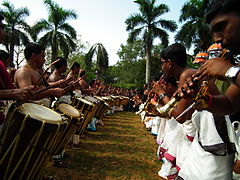

Thrissur Pooram
The Thrissur Pooram is an annual temple festival held in Thrissur, Kerala, India. It is held at the Vadakkunnathan (Shiva) Temple in Thrissur every year on the Pooram (pronounced [puːɾam]) day—the day when the moon rises with the Pooram star in the Malayalam Calendar month of Medam. It is the largest and most famous of all poorams in India
Thrissur Pooram (തൃശ്ശൂര് പൂരം) was the brainchild of Rama Varma Kunhjippilla Thampuran, or Rama Varma IX, famously known as Sakthan Thampuran, the Maharaja of Cochin (1790–1805).[citation needed] Before the start of Thrissur Pooram, the largest temple festival in Kerala was the one-day festival held at Aarattupuzha known as Arattupuzha Pooram. Temples in and around the city of Thrissur were regular participants. In the year 1798 because of incessant rains, the temples with from Thrissur were late for the Arattupuzha Pooram and were denied access to the Pooram procession. Feeling embarrassed and angered by the denial, the temple[clarification needed] authorities raised the issue with Sakthan Thampuran.[3]This made him take the decision to unify the 10 temples situated around Vadakkunnathan Temple and organized the celebration of Thrissur Pooram as a mass festival. He invited temples with their deities to the city of Thrissur to pay obeisance to Lord Vadakkunnathan (Lord Siva), the presiding deity of the Vadakkunnathan Temple. Something unique about this festival is that everything used in the festival is made fresh every year from scratch. There are people who are given the duty to craft the umbrellas and the nettipattam.
Despite being a Hindu festival, the Thrissur Pooram is attended by different sections of Kerala society.[17] Several replicas of the festival are held in places in Kerala[18] as well as outside the state.[19][20][21]Thrissur Pooram is considered one of the greatest gatherings in Asia. It has an important place in the tourism map of India, as tourists enjoy the beauty and traditions of this pooram. Rail and bus connectivity is excellent in Thrissur, which attracts many foreign tourists to the gala. It is considered as meeting of Devas (ദേവ സംഗമം).The Oscar-winning sound editor Resul Pookutty and his team recorded the sounds of the 36-hour festivities and made a movie The Sound Story.[22]